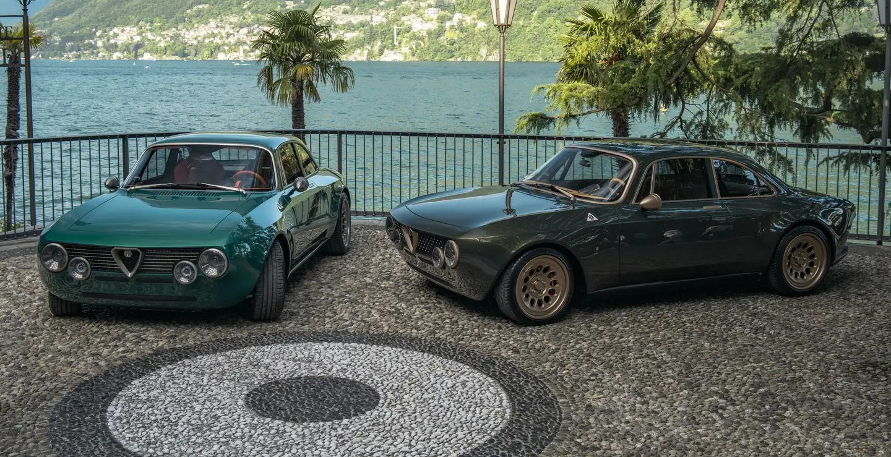
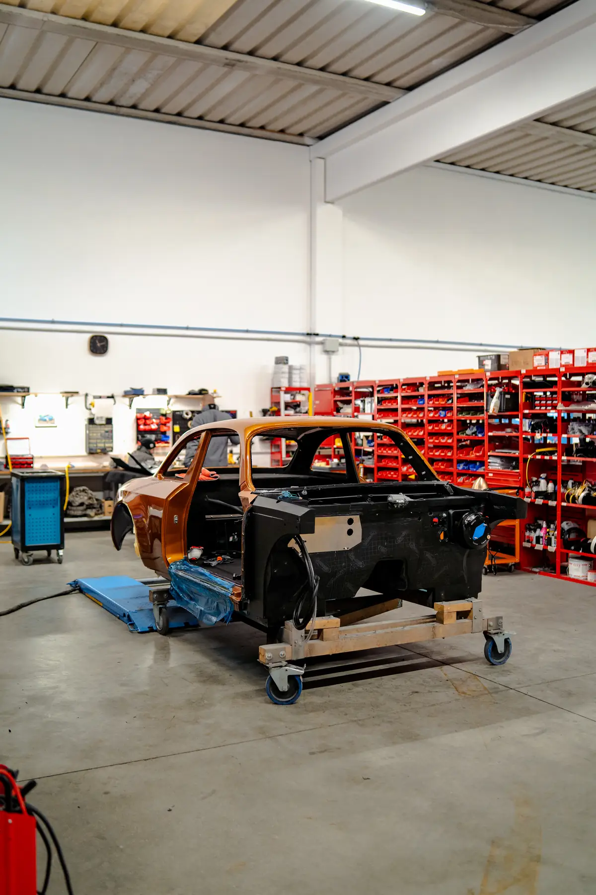
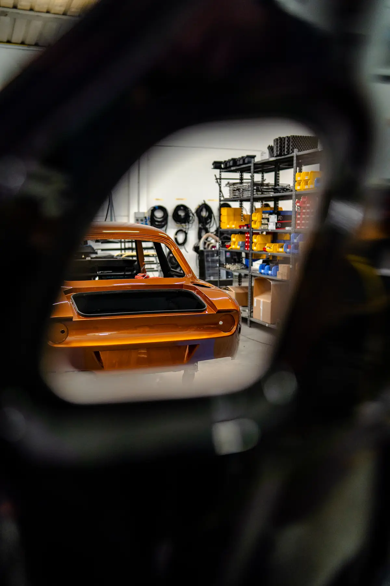
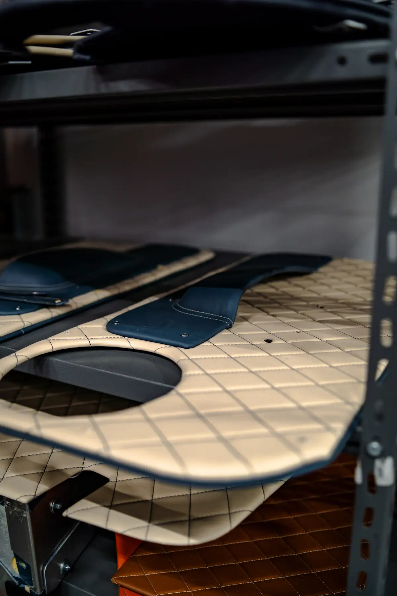
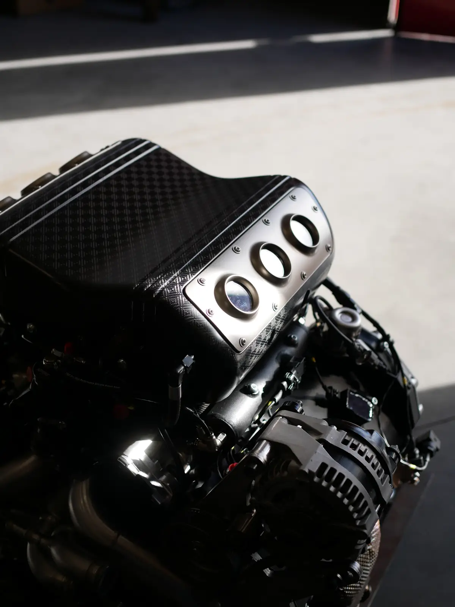
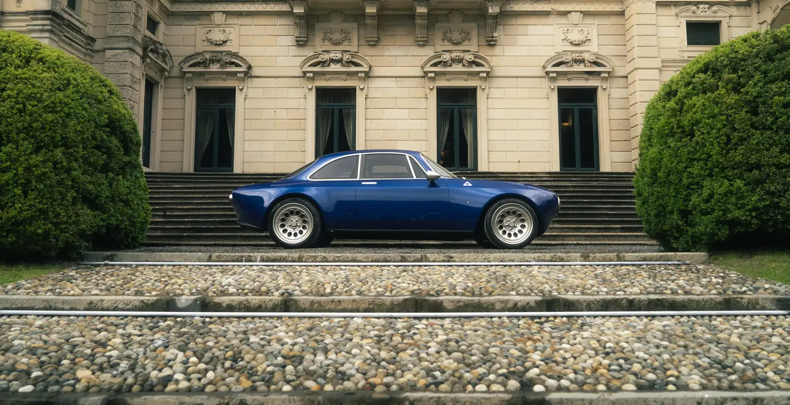

The house
An entirely Italian house.
Design, engineering and style born in an atelier that does not build in volume.
01Our vision
Italian passion, a customer-driven approach.
Totem Automobili joins the world-renowned Italian passion for elegance and aesthetics with an approach driven entirely by the client.
Founded in 2018 in the Venice area, the house established itself quickly through craftsmanship and expertise. Its point of departure is the Italian grand tourer of the 1960s; its method is contemporary engineering, developed with specialist partners and carried out by hand.
Every motor car is conceived for one person. Each commission begins as a conversation and ends as a signature: timeless lines, the finest materials and engineering that answers only to the road.



02Values
What guides every car.
- 01
Passion for cars
Every Totem is built by people who drive, for people who drive.
- 02
Care for every detail
Nothing is incidental, not even the components no one will ever see.
- 03
Extreme personalisation
Each car is conceived for one person and shaped by hand around them.
- 04
Technological avant-garde
Carbon fibre, billet aluminium and modern powertrains beneath a timeless shape.
03In the making
Nothing is incidental.
A drawing on a desk, a panel quilted by hand, an engine waiting in the light: the same care goes into what is seen and into what never will be.






04Partners
In good company.
Totem develops its cars with specialist partners chosen for their excellence, from the engine to the silk of a seat insert.
- Italtecnica Engineering
- Brembo
- Michelin
- ORAM
- Capristo
- Sabelt
- Audio Development
- E.Marinella

05Concours & events
Recognised where it matters.
Monterey Car Week, from The Quail and Motorlux to Concorso Italiano; the Concorso d’Eleganza Villa d’Este and Como Car Week; the 1000 Miglia Green, where the GT Electric was Guest Car in 2024; the Goodwood Festival of Speed; The I.C.E. St. Moritz.